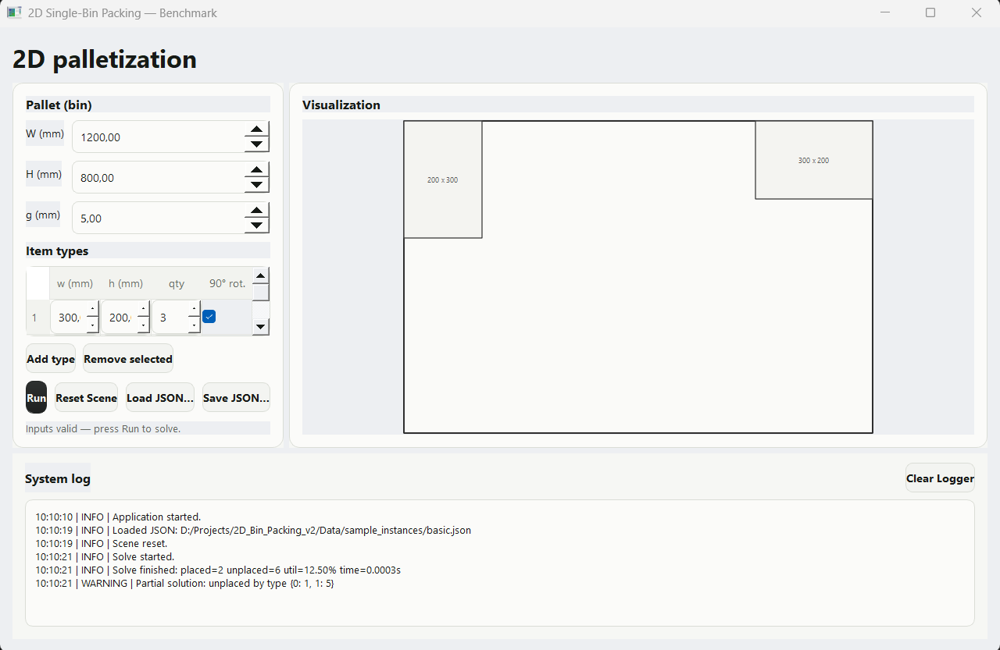

Development Timeline
Cursor offers four interaction modes. For the initial build: Ask → Plan → Agent (Build) → Iterate.
Q&A only. Doesn't touch files.
Architecture, diagrams, rules. Project start.
Writes, edits, deletes code. Primary tool.
Targeted error resolution.
How it went
Functional code, ugly GUI
Agent found a solver online and produced working code. Boxes placed correctly. The interface? Zero design thinking.
Gradual redesign with references
Fed award-winning web designs as visual references. Screenshots as feedback. Incremental improvement, but hitting limits without proper agent configuration.
New model, decision to restart
Cursor shipped Composer 2 mid-development. Rather than continuing with the old model, I restarted with proper preparation — Skills, Sub-agents, and Rules configured before the first prompt.
Prepared agent, dramatically better
Sub-agent analyzed a design reference screenshot. Skill guided PyQt styling. The second first-shot produced a significantly better interface. Solver added in prompt #2.


Iterative fixes and self-critique
Circled visual issues on screenshots. Asked the agent to find and fix flaws autonomously. Sub-agent caught spacing, alignment, and hierarchy issues I would have missed.